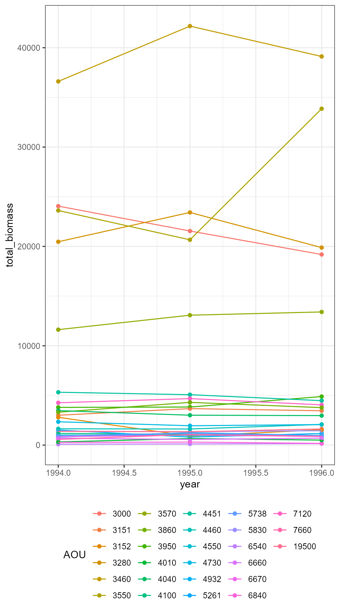
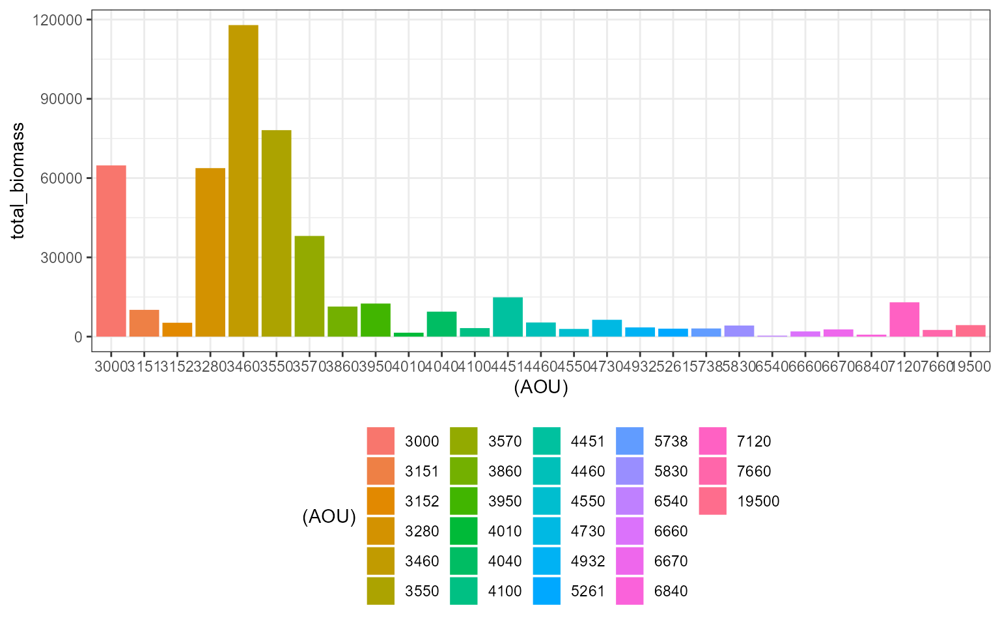
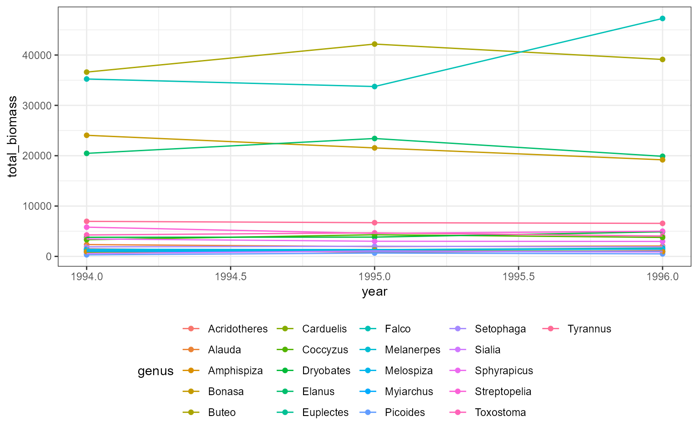

The community_generate and
community_summarize functions are flexible, high-level
functions for generating individual-level body mass and metabolic rate
estimates for all the individuals in a community and summarizing these
measurements at different levels of hierarchy.
Generating estimates using community_generate
community_generate takes a dataframe with species-level
information (AOU, scientific name, or mean and/or standard deviation
body mass) and population sizes, and returns a dataframe of
individual-level mass and BMR measurements for all the entries in the
input data frame.
Simulations using AOU
This workflow is most closely designed to work with the North American Breeding Bird Survey.
Here, we use a synthetic dataset with the same column names as data
downloaded from the North American Breeding Bird Survey
(demo_route_raw). First, we filter the data to remove
poorly-sampled or unidentified species. For speed, we also filter to
records only from the years 1994-1996. This results in a data frame with
species’ abundances for all species from 1994-1996 on this
(hypothetical) route, and additional data fields identifying the
route.
demo_route_raw <- demo_route_raw
demo_route_clean <- demo_route_raw %>%
filter_bbs_survey() %>%
dplyr::filter(year %in% 1994:1996)
head(demo_route_clean)
#> record_id routedataid countrynum statenum route rpid year AOU count10
#> 1 900000 9009911011994 900 99 1 101 1994 4730 8
#> 2 900001 9009911011995 900 99 1 101 1995 4730 13
#> 3 900002 9009911011996 900 99 1 101 1996 4730 8
#> 4 900029 9009911011994 900 99 1 101 1994 3570 15
#> 5 900030 9009911011995 900 99 1 101 1995 3570 10
#> 6 900031 9009911011996 900 99 1 101 1996 3570 11
#> count20 count30 count40 count50 stoptotal speciestotal
#> 1 12 15 12 15 5 62
#> 2 9 11 10 10 5 53
#> 3 11 9 13 15 5 56
#> 4 10 14 7 16 5 62
#> 5 16 16 11 16 5 69
#> 6 15 15 18 11 5 70community_generate can take this table and generate
simulated individual measurements with no additional tweaks. It uses the
AOU and speciestotal columns from
demo_route_clean to look up species’ mean and standard
deviation body masses based on their AOU and then draw individual size
measurements from a normal distribution with those parameters.
set.seed(22)
demo_route_sims <- community_generate(community_data_table = demo_route_clean)
head(demo_route_sims)
#> record_id routedataid countrynum statenum route rpid year count10 count20
#> 1 900000 9009911011994 900 99 1 101 1994 8 12
#> 2 900000 9009911011994 900 99 1 101 1994 8 12
#> 3 900000 9009911011994 900 99 1 101 1994 8 12
#> 4 900000 9009911011994 900 99 1 101 1994 8 12
#> 5 900000 9009911011994 900 99 1 101 1994 8 12
#> 6 900000 9009911011994 900 99 1 101 1994 8 12
#> count30 count40 count50 stoptotal speciestotal AOU sim_species_id
#> 1 15 12 15 5 62 4730 4730
#> 2 15 12 15 5 62 4730 4730
#> 3 15 12 15 5 62 4730 4730
#> 4 15 12 15 5 62 4730 4730
#> 5 15 12 15 5 62 4730 4730
#> 6 15 12 15 5 62 4730 4730
#> individual_mass individual_bmr mean_size sd_size abundance sd_method
#> 1 35.78463 134.5783 37.475 3.300613 62 AOU lookup
#> 2 45.67763 160.1614 37.475 3.300613 62 AOU lookup
#> 3 40.80144 147.7750 37.475 3.300613 62 AOU lookup
#> 4 38.44147 141.6288 37.475 3.300613 62 AOU lookup
#> 5 36.78531 137.2509 37.475 3.300613 62 AOU lookup
#> 6 43.60784 154.9526 37.475 3.300613 62 AOU lookup
#> scientific_name
#> 1 Alauda arvensis
#> 2 Alauda arvensis
#> 3 Alauda arvensis
#> 4 Alauda arvensis
#> 5 Alauda arvensis
#> 6 Alauda arvensisSimulation given species’ names
If the AOU is not known or not provided,
community_generate will attempt to look up species’ size
parameters based on their scientific name.
Here we generate a version of demo_route_clean with no
AOU column:
demo_route_names <- demo_route_clean %>%
left_join(select(sd_table, AOU, scientific_name)) %>%
select(-AOU)
#> Joining with `by = join_by(AOU)`community_generate still runs, but note that the
sd_method here is listed as
Scientific name lookup rather than AOU lookup
(above).
set.seed(22)
demo_route_names_sims <- community_generate(demo_route_names)
head(demo_route_names_sims)
#> record_id routedataid countrynum statenum route rpid year count10 count20
#> 1 900000 9009911011994 900 99 1 101 1994 8 12
#> 2 900000 9009911011994 900 99 1 101 1994 8 12
#> 3 900000 9009911011994 900 99 1 101 1994 8 12
#> 4 900000 9009911011994 900 99 1 101 1994 8 12
#> 5 900000 9009911011994 900 99 1 101 1994 8 12
#> 6 900000 9009911011994 900 99 1 101 1994 8 12
#> count30 count40 count50 stoptotal speciestotal AOU sim_species_id
#> 1 15 12 15 5 62 4730 4730
#> 2 15 12 15 5 62 4730 4730
#> 3 15 12 15 5 62 4730 4730
#> 4 15 12 15 5 62 4730 4730
#> 5 15 12 15 5 62 4730 4730
#> 6 15 12 15 5 62 4730 4730
#> individual_mass individual_bmr mean_size sd_size abundance
#> 1 35.78463 134.5783 37.475 3.300613 62
#> 2 45.67763 160.1614 37.475 3.300613 62
#> 3 40.80144 147.7750 37.475 3.300613 62
#> 4 38.44147 141.6288 37.475 3.300613 62
#> 5 36.78531 137.2509 37.475 3.300613 62
#> 6 43.60784 154.9526 37.475 3.300613 62
#> sd_method scientific_name
#> 1 Scientific name lookup Alauda arvensis
#> 2 Scientific name lookup Alauda arvensis
#> 3 Scientific name lookup Alauda arvensis
#> 4 Scientific name lookup Alauda arvensis
#> 5 Scientific name lookup Alauda arvensis
#> 6 Scientific name lookup Alauda arvensisSimulation given mean size measurements
If species name or AOU are not known, or are not included in this
dataset (see known_species for the full set of included
species), estimates can still be generated by providing the mean and, if
available, standard deviation of body mass directly. If standard
deviation is provided, it will be used; if not, it will be estimated
based on the scaling relationship between mean and standard deviation of
body mass for birds (see the scaling vignette).
Here we generate a version of demo_route_clean with no
AOU or species name columns, but with records of mean body size for all
species. Note that the mean body mass must be in a column called
mean_size.
demo_route_means <- demo_route_clean %>%
left_join(select(sd_table, AOU, mean_mass)) %>%
select(-AOU) %>%
rename(mean_size = mean_mass)
#> Joining with `by = join_by(AOU)`
set.seed(22)
demo_route_means_sims <- community_generate(demo_route_means)
head(demo_route_means_sims)
#> record_id routedataid countrynum statenum route rpid year count10 count20
#> 1 900000 9009911011994 900 99 1 101 1994 8 12
#> 2 900000 9009911011994 900 99 1 101 1994 8 12
#> 3 900000 9009911011994 900 99 1 101 1994 8 12
#> 4 900000 9009911011994 900 99 1 101 1994 8 12
#> 5 900000 9009911011994 900 99 1 101 1994 8 12
#> 6 900000 9009911011994 900 99 1 101 1994 8 12
#> count30 count40 count50 stoptotal speciestotal AOU sim_species_id
#> 1 15 12 15 5 62 NA NA
#> 2 15 12 15 5 62 NA NA
#> 3 15 12 15 5 62 NA NA
#> 4 15 12 15 5 62 NA NA
#> 5 15 12 15 5 62 NA NA
#> 6 15 12 15 5 62 NA NA
#> individual_mass individual_bmr mean_size sd_size abundance
#> 1 36.13015 135.5035 37.475 2.625949 62
#> 2 44.00097 155.9473 37.475 2.625949 62
#> 3 40.12150 146.0149 37.475 2.625949 62
#> 4 38.24392 141.1095 37.475 2.625949 62
#> 5 36.92628 137.6257 37.475 2.625949 62
#> 6 42.35426 151.7633 37.475 2.625949 62
#> sd_method scientific_name
#> 1 SD estimated from mean <NA>
#> 2 SD estimated from mean <NA>
#> 3 SD estimated from mean <NA>
#> 4 SD estimated from mean <NA>
#> 5 SD estimated from mean <NA>
#> 6 SD estimated from mean <NA>Here, we include standard deviation measurements in a column called
sd_size:
demo_route_mean_sds <- demo_route_clean %>%
left_join(select(sd_table, AOU, mean_mass, mean_sd)) %>%
select(-AOU) %>%
rename(mean_size = mean_mass,
sd_size = mean_sd)
#> Joining with `by = join_by(AOU)`
set.seed(22)
demo_route_mean_sds_sims <- community_generate(demo_route_mean_sds)
head(demo_route_mean_sds_sims)
#> record_id routedataid countrynum statenum route rpid year count10 count20
#> 1 900000 9009911011994 900 99 1 101 1994 8 12
#> 2 900000 9009911011994 900 99 1 101 1994 8 12
#> 3 900000 9009911011994 900 99 1 101 1994 8 12
#> 4 900000 9009911011994 900 99 1 101 1994 8 12
#> 5 900000 9009911011994 900 99 1 101 1994 8 12
#> 6 900000 9009911011994 900 99 1 101 1994 8 12
#> count30 count40 count50 stoptotal speciestotal AOU sim_species_id
#> 1 15 12 15 5 62 NA NA
#> 2 15 12 15 5 62 NA NA
#> 3 15 12 15 5 62 NA NA
#> 4 15 12 15 5 62 NA NA
#> 5 15 12 15 5 62 NA NA
#> 6 15 12 15 5 62 NA NA
#> individual_mass individual_bmr mean_size sd_size abundance
#> 1 35.78463 134.5783 37.475 3.300613 62
#> 2 45.67763 160.1614 37.475 3.300613 62
#> 3 40.80144 147.7750 37.475 3.300613 62
#> 4 38.44147 141.6288 37.475 3.300613 62
#> 5 36.78531 137.2509 37.475 3.300613 62
#> 6 43.60784 154.9526 37.475 3.300613 62
#> sd_method scientific_name
#> 1 Mean and SD provided <NA>
#> 2 Mean and SD provided <NA>
#> 3 Mean and SD provided <NA>
#> 4 Mean and SD provided <NA>
#> 5 Mean and SD provided <NA>
#> 6 Mean and SD provided <NA>Summarizing results using community_summarize
community_summarize reports summary metrics (total
abundance, biomass, and energy use; and mean and standard deviation
biomass and metabolic rate) with flexible grouping. By default, it can
group by year - e.g. giving the total biomass of all birds in each year
of a survey - by species, or both. It can also group by additional
variables via the custom grouping option.
Summarize grouping by year
Here, we summarize grouping by year to show the total biomass of all species of birds in each year surveyed:
annual_summary <- demo_route_sims %>%
community_summarize(level = "year")
head(annual_summary)
#> routedataid countrynum statenum route rpid year species_designator
#> 1 9009911011994 900 99 1 101 1994 AOU
#> 63 9009911011995 900 99 1 101 1995 AOU
#> 116 9009911011996 900 99 1 101 1996 AOU
#> total_abundance total_biomass total_metabolic_rate total_richness
#> 1 1361 157363.5 352777.0 27
#> 63 1443 161697.1 364962.8 27
#> 116 1413 166112.8 368952.9 27
#> mean_individual_mass sd_individual_mass mean_metabolic_rate
#> 1 115.6234 179.2453 259.2043
#> 63 112.0562 175.1756 252.9195
#> 116 117.5603 184.4482 261.1132
#> sd_metabolic_rate
#> 1 288.8112
#> 63 284.1798
#> 116 295.4902
ggplot(annual_summary, aes(year, total_biomass)) +
geom_point() +
geom_line()
Summarize grouping by year and species
Grouping by year and species gives the total biomass for each species in each year:
species_annual_summary <- demo_route_sims %>%
community_summarize(level = "species_and_year") %>%
mutate(AOU = as.factor(AOU))
head(species_annual_summary)
#> routedataid countrynum statenum route rpid year AOU sim_species_id
#> 1 9009911011994 900 99 1 101 1994 4730 4730
#> 63 9009911011995 900 99 1 101 1995 4730 4730
#> 116 9009911011996 900 99 1 101 1996 4730 4730
#> 172 9009911011994 900 99 1 101 1994 3570 3570
#> 234 9009911011995 900 99 1 101 1995 3570 3570
#> 303 9009911011996 900 99 1 101 1996 3570 3570
#> scientific_name mean_size sd_size species_designator total_abundance
#> 1 Alauda arvensis 37.475 3.300613 AOU 62
#> 63 Alauda arvensis 37.475 3.300613 AOU 53
#> 116 Alauda arvensis 37.475 3.300613 AOU 56
#> 172 Falco columbarius 190.500 15.650000 AOU 62
#> 234 Falco columbarius 190.500 15.650000 AOU 69
#> 303 Falco columbarius 190.500 15.650000 AOU 70
#> total_biomass total_metabolic_rate total_richness mean_individual_mass
#> 1 2350.136 8686.477 1 37.90542
#> 63 1949.481 7268.589 1 36.78265
#> 116 2068.832 7703.940 1 36.94343
#> 172 11623.179 27157.348 1 187.47063
#> 234 13076.778 30451.413 1 189.51853
#> 303 13404.315 31133.849 1 191.49022
#> sd_individual_mass mean_metabolic_rate sd_metabolic_rate
#> 1 3.426614 140.1045 8.983515
#> 63 3.156561 137.1432 8.371939
#> 116 3.155008 137.5704 8.381389
#> 172 15.328031 438.0217 25.624170
#> 234 17.937689 441.3248 29.899519
#> 303 13.658842 444.7693 22.699730
ggplot(species_annual_summary, aes(year, total_biomass, color = AOU)) +
geom_point() +
geom_line() +
theme(legend.position = "bottom")
Summarize grouping by species
Grouping by species gives the total biomass (etc) for each species over all survey years:
species_summary <- community_summarize(demo_route_sims, level = "species") %>%
mutate(AOU = as.factor(AOU))
head(species_summary)
#> countrynum statenum route rpid AOU sim_species_id scientific_name
#> 1 900 99 1 101 4730 4730 Alauda arvensis
#> 172 900 99 1 101 3570 3570 Falco columbarius
#> 373 900 99 1 101 5261 5261 Carduelis carduelis
#> 561 900 99 1 101 3460 3460 Buteo plagiatus
#> 784 900 99 1 101 3950 3950 Dryobates borealis
#> 1043 900 99 1 101 3280 3280 Elanus leucurus
#> mean_size sd_size species_designator total_abundance total_biomass
#> 1 37.475 3.300613 AOU 171 6368.449
#> 172 190.500 15.650000 AOU 201 38104.272
#> 373 16.000 1.113624 AOU 188 3017.984
#> 561 528.500 37.822484 AOU 223 117903.604
#> 784 48.000 7.600000 AOU 259 12517.993
#> 1043 346.000 23.300000 AOU 184 63771.282
#> total_metabolic_rate total_richness mean_individual_mass
#> 1 23659.01 1 37.24239
#> 172 88742.61 1 189.57349
#> 373 14279.17 1 16.05311
#> 561 204599.98 1 528.71571
#> 784 43063.20 1 48.33202
#> 1043 124935.25 1 346.58306
#> sd_individual_mass mean_metabolic_rate sd_metabolic_rate
#> 1 3.276746 138.35676 8.654565
#> 172 15.750562 441.50552 26.258117
#> 373 1.100745 75.95302 3.714519
#> 561 39.559433 917.48869 48.850299
#> 784 8.026146 166.26719 19.828227
#> 1043 23.501363 678.99590 32.919925
ggplot(species_summary, aes((AOU), total_biomass, fill = (AOU))) +
geom_col() +
theme(legend.position = "bottom")
Summarize with custom grouping
community_generate can use the
level = "custom" setting to group by additional
id_vars. Here, we group by year and
genus:
demo_route_sims$genus <- apply(as.matrix(demo_route_sims$scientific_name), 1,
FUN = function(x) return(unlist(strsplit(x, " "))[[1]]))
annual_genera_summary <- community_summarize(demo_route_sims, level = "custom", id_vars = c("year", "genus"))
head(annual_genera_summary)
#> year genus species_designator total_abundance total_biomass
#> 1 1994 Alauda AOU 62 2350.136
#> 63 1995 Alauda AOU 53 1949.481
#> 116 1996 Alauda AOU 56 2068.832
#> 172 1994 Falco AOU 94 35238.707
#> 234 1995 Falco AOU 97 33743.982
#> 303 1996 Falco AOU 117 47264.748
#> total_metabolic_rate total_richness mean_individual_mass sd_individual_mass
#> 1 8686.477 1 37.90542 3.426614
#> 63 7268.589 1 36.78265 3.156561
#> 116 7703.940 1 36.94343 3.155008
#> 172 64403.357 2 374.87986 263.967052
#> 234 63043.590 2 347.87610 251.755083
#> 303 84910.029 2 403.97220 262.094600
#> mean_metabolic_rate sd_metabolic_rate
#> 1 140.1045 8.983515
#> 63 137.1432 8.371939
#> 116 137.5704 8.381389
#> 172 685.1421 347.804644
#> 234 649.9339 331.530089
#> 303 725.7267 346.218737
ggplot(annual_genera_summary, aes(year, total_biomass, color = genus)) +
geom_point() +
geom_line() +
theme(legend.position = "bottom")